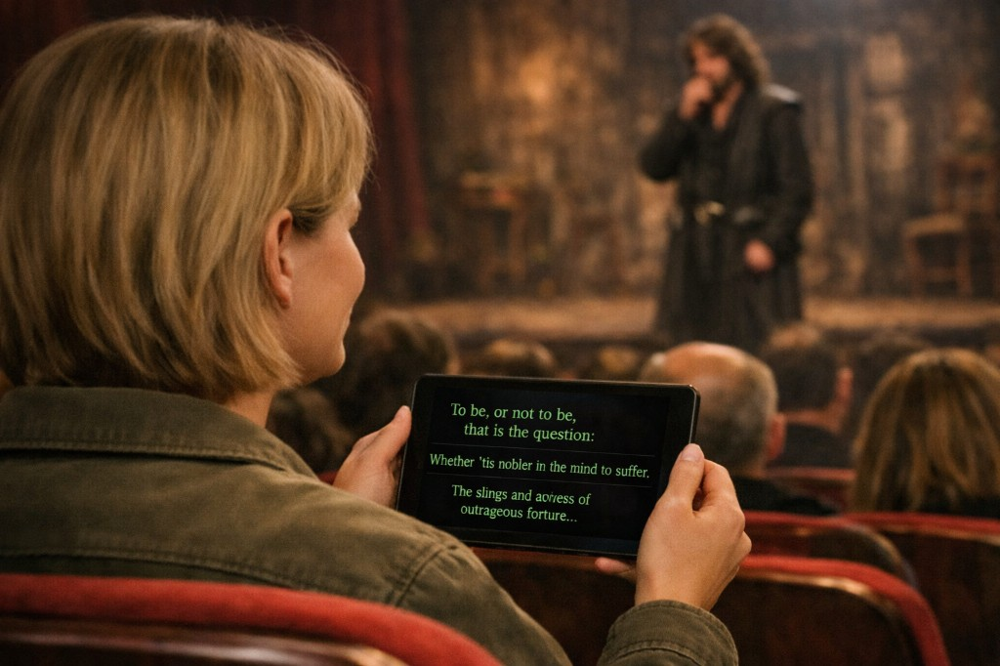
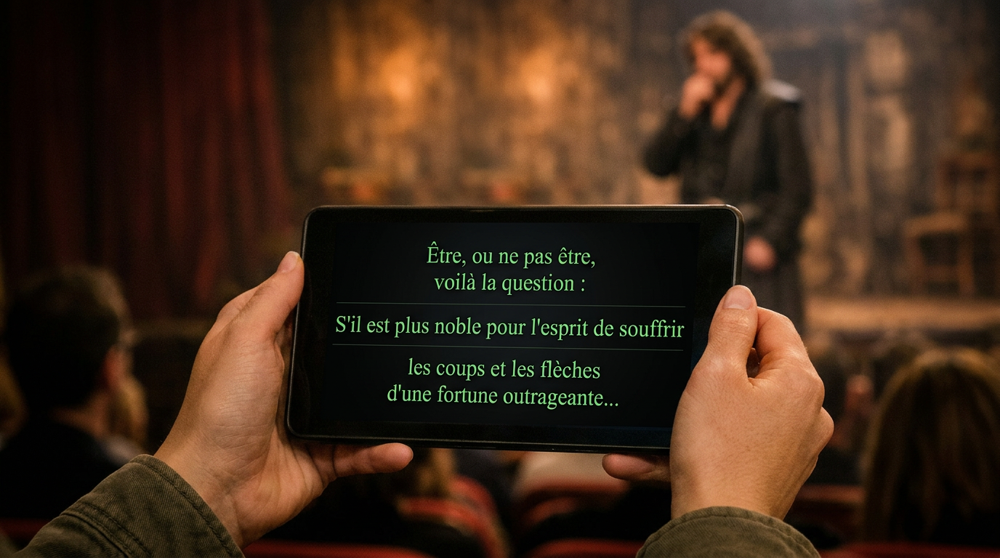

Sous-titres
Messages OSC et page web pour afficher le texte en temps réel, avec styles et commandes avancées.

Accesible est une application macOS pour les spectacles accessibles. Elle s’appuie sur QLab (Figure 53) et propose des serveurs de sous-titres, de traduction, d’audiodescription et de vidéo en langue des signes sur le réseau local.
Le lien vers la boutique sera mis à jour lorsque l’app sera publiée.
Messages OSC et page web pour afficher le texte en temps réel, avec styles et commandes avancées.

Même flux que les sous-titres ; traduction vers la langue de sortie choisie et affichage sur un autre port.

Lecture d’audio préenregistré depuis les dossiers du projet, pilotée par OSC.

Streaming MP4 en langue des signes, synchronisation et contrôles OSC pour le client dans le navigateur.
Vous pouvez choisir le dossier de votre projet QLab ou gérer des projets dans un emplacement de base. L’app conserve une structure claire pour les médias et la configuration.